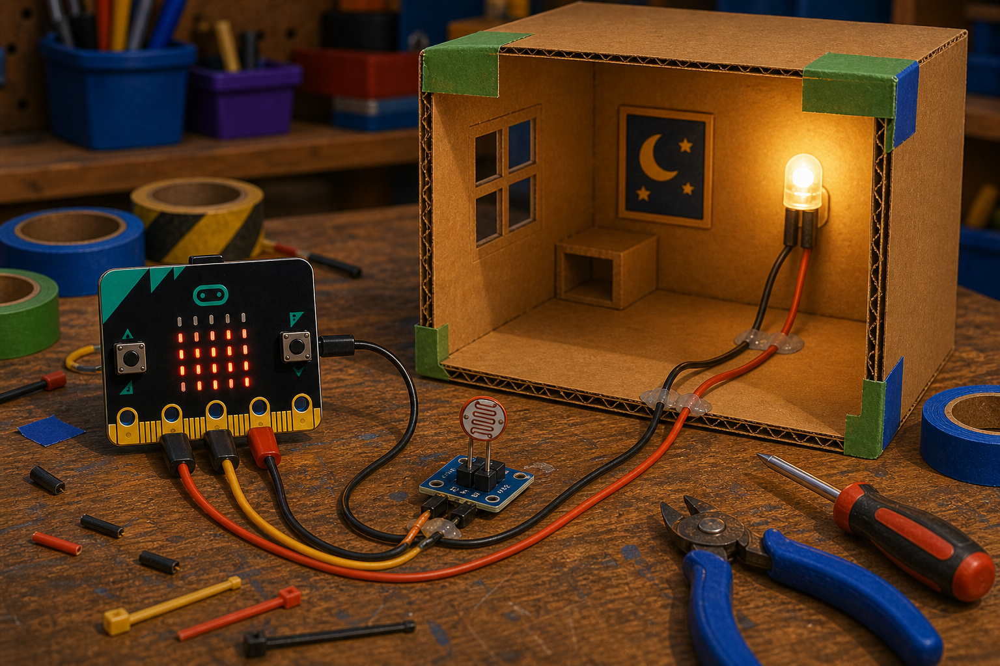
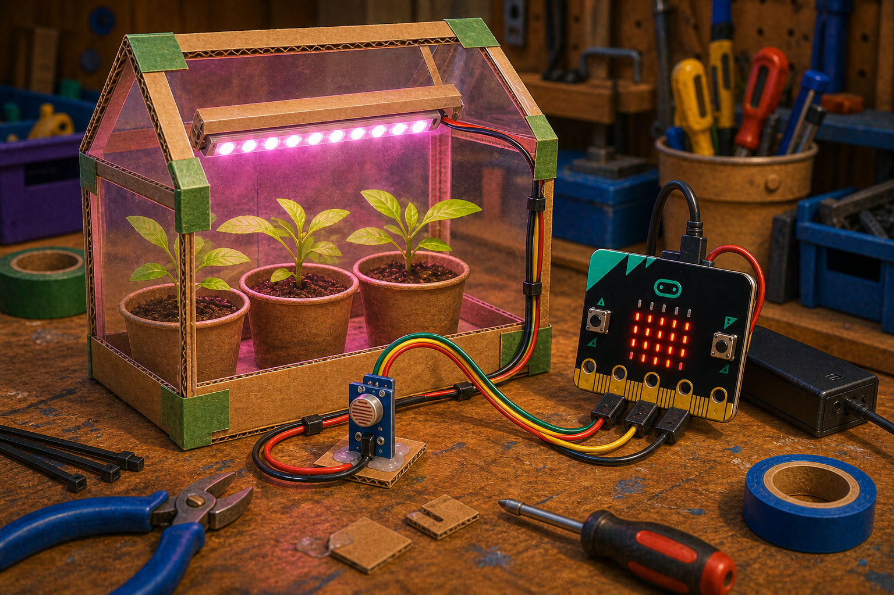

Automatic night light
DetectPin light reading
→
DecideRoom is dark
→
DoTurn on a light
An LDR is a light sensor that tells your project how bright or dark it is.
LDR stands for light dependent resistor. Its resistance changes when more or less light falls on the sensor face.
With a micro:bit, you read the LDR on an analog pin to get a light level.


from microbit import *
while True:
brightness = pin0.read_analog()
display.scroll(brightness)basic.forever(function () {
let brightness = pins.analogReadPin(AnalogPin.P0)
basic.showNumber(brightness)
})pin0.read_analog() returns a value from 0 to 1023. Use brightness in your Decide code to react to light or dark.